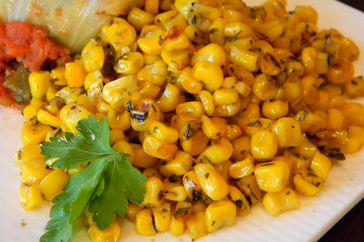

Irresistible Italian Corn

These garlic mushrooms are easy to make by sautéing sliced mushrooms in
butter with red wine. Delicious with grilled steaks or on top of toasted
bread for a tasty appetizer.
Ingredients
- 1½ tablespoons butter
- 2½ cups whole kernel sweet corn
- 1 tablespoon Italian seasoning
- 1 pinch salt and ground black pepper
Directions
-
Heat a skillet over high heat. Heat butter in hot skillet until almost
completely melted; stir in corn. Season corn with Italian seasoning,
salt, and black pepper. Cook seasoned corn until light golden brown,
about 5 minutes.